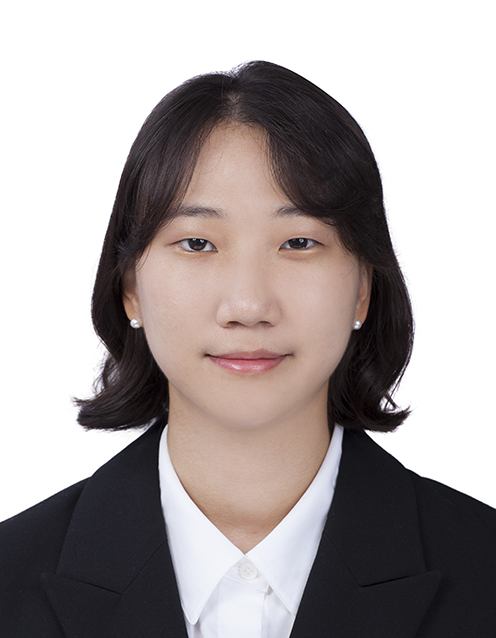

Geunhee Kim
Research Intern, Korea Institute of Science and Technology (KIST)
I build world models that know where a robot is touching, so that learning-based manipulation can run on real humanoids.
I am a research intern at KIST, working with Dr. Hwasup Lim on a contact-aware world model whose predicted contacts feed the low-level controller of a Unitree G1 humanoid. Before that, I was a visiting graduate student at the LG Toronto AI Lab, where I worked on efficient chain-of-thought reasoning for vision-language-action (VLA) models, and I completed my M.S. in Industrial Engineering at Yonsei University with a thesis on diffusion-based motion generation.
My interests are world models, VLA models, and learning-based manipulation, with an emphasis on getting these models to work on physical robots. I am applying to Ph.D. programs for Fall 2027.

News
- Our paper AUC-CoT is presented at the CoRL 2026 Workshop on Modeling Uncertainty in Robotic World Models.
- Started as a research intern at KIST, working on contact-aware world models for the Unitree G1 humanoid.
- Completed my M.S. in Industrial Engineering at Yonsei University.
- Joined the LG Toronto AI Lab as a visiting graduate student, funded by the MSIT & IITP government scholarship.
- Received the Outstanding Paper Award at the KIISS Fall Conference.
- Won 1st place (out of 109 participants) in the FathomNet 2025 Challenge at the FGVC Workshop, CVPR 2025.
Publications
-
2026
AUC-CoT: Action-Uncertainty-Conditioned Chain-of-Thought Reasoning for Vision-Language-Action Models
CoRL 2026 Workshop on Modeling Uncertainty in Robotic World Models
An uncertainty-based gate that lets a VLA model decide, per action, whether to spend compute on chain-of-thought reasoning, so reasoning is invoked only where action prediction is uncertain.
* Equal contribution
-
2025
Spatio-Temporal Transformer based Diffusion Model for Sign Language Production
Journal of Intelligence and Information Systems (JIIS), 2025
A diffusion model with a spatio-temporal transformer backbone that generates natural sign language motion from text.
-
2023
3D Urban Map Builder using Neural Radiance Fields
Proceedings of the Institute of Control, Robotics and Systems (ICROS), 2023
* Equal contribution
Manuscripts under review
-
Integrating Spatio-Temporal Block into Diffusion-based Sign Language Production
-
MATANet: A Multi-context Attention and Taxonomy-Aware Network for Fine-Grained Underwater Recognition of Marine Species
-
MaDiFT: Magnitude–Direction Feature Transformation for Detector-Agnostic Industrial Anomaly Detection
-
How Gender Shapes Decision Bias and Visual Attention in AI-Generated Face Authenticity Judgments
Research experience
-
Sep 2026 –
presentResearch Intern, Korea Institute of Science and Technology (KIST)
Advisor: Dr. Hwasup Lim · Seoul
- Developing a contact-aware world model that predicts contact information alongside future states, and integrating the predicted contacts into the low-level controller, targeting deployment on the Unitree G1 humanoid.
- Built a teleoperation dataset on the Unitree G1 for humanoid loco-manipulation in kitchen tasks.
- Investigated reward modeling for long-horizon VLA models as part of a government-funded project.
-
Jan 2026 –
Jun 2026Visiting Graduate Student, LG Toronto AI Lab
Advisor: Dr. Ali Pesaranghader · Toronto
- Conducted research on efficient chain-of-thought reasoning for VLA models.
- Proposed an uncertainty-based gating method that selectively invokes reasoning during robotic action prediction (AUC-CoT).
-
Mar 2024 –
Aug 2026Graduate Research Assistant, Yonsei University
Advisor: Prof. Wooju Kim · Seoul
- Contributed to a government-funded multimodal AI project on bidirectional sign language translation.
- Developed a spatio-temporal transformer based diffusion model for sign language motion generation and generalized it into a plug-in block for existing models.
Education
-
2024 – 2026
M.S. in Industrial Engineering, Yonsei University
Seoul, South Korea
-
2026
Visiting Student, University of Toronto
Department of Mechanical & Industrial Engineering · AI Convergence Education Program (MSIT & IITP)
-
2020 – 2024
B.S. in Robotics, Kwangwoon University
Seoul, South Korea
Awards
-
2026
Government Scholarship, University of Toronto AI Convergence Education Program
Ministry of Science and ICT (MSIT) & IITP, South Korea
-
Nov 2025
Outstanding Paper Award, KIISS Fall Conference
Korea Intelligent Information Systems Society
-
Jun 2025
1st Place, FathomNet 2025 Challenge
FGVC Workshop, CVPR 2025 · 1st of 109 participants
-
2020 – 2024
Academic Excellence Scholarship, Kwangwoon University
Awarded four times · top 10% by GPA
-
Aug 2023
3rd Place, 88 Robot Week SHARE Challenge
Shared AI-Robotics Education School
Skills
- Robots
- Unitree G1 humanoid, teleoperation pipelines
- Learning
- PyTorch, world models, VLA models, diffusion models, reinforcement learning
- Programming
- Python, C++, ROS 2
Teaching
-
2025
Teaching Assistant, Changing the World through Programming (Python)
Yonsei University · Spring and Fall 2025 · ~200 students; built an automated grading tool in Python